初期状態からCRが入力されたとき、CR状態に入る（LFが入力された場合、そのまま出力して初期状態にとどまる）。
CR状態からCRが入力された場合、CR状態にとどまる。それ以外の入力は、初期状態に戻る。
終了タグ</script>の処理中に参照・変更される。スクリプト内からdocument.write()で文 字を書き込まれる位置。document.write()内から更に<script>タグが入力されその中か ら・・・という風にネストされることがある。
操作箇所は以下の通り。
挿入地点は常に「次の入力の前」なので、何回ネストされようとも同じ位置になるように思えるが、規格は位置の保存と復帰を行う。実装はスクリプトをサポート しないので、入力ストリームの「挿入点」も実装しないが、拡張時に備えてツリー構築から呼び出しする。しかし、何もせず挿入点も変更しない。拡張時に備えて、 変数の直接操作ではなく、メンバ関数の呼び出しとする。